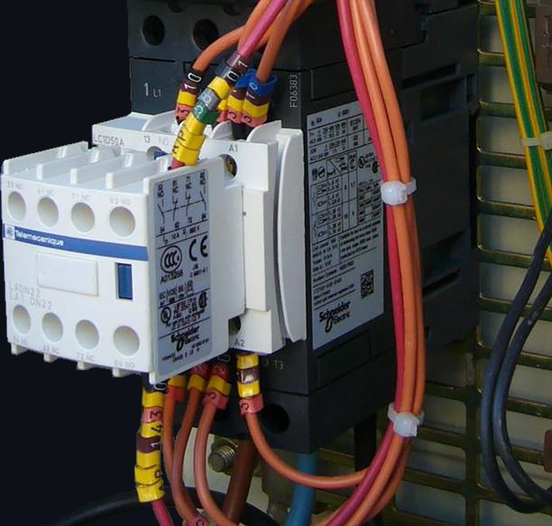
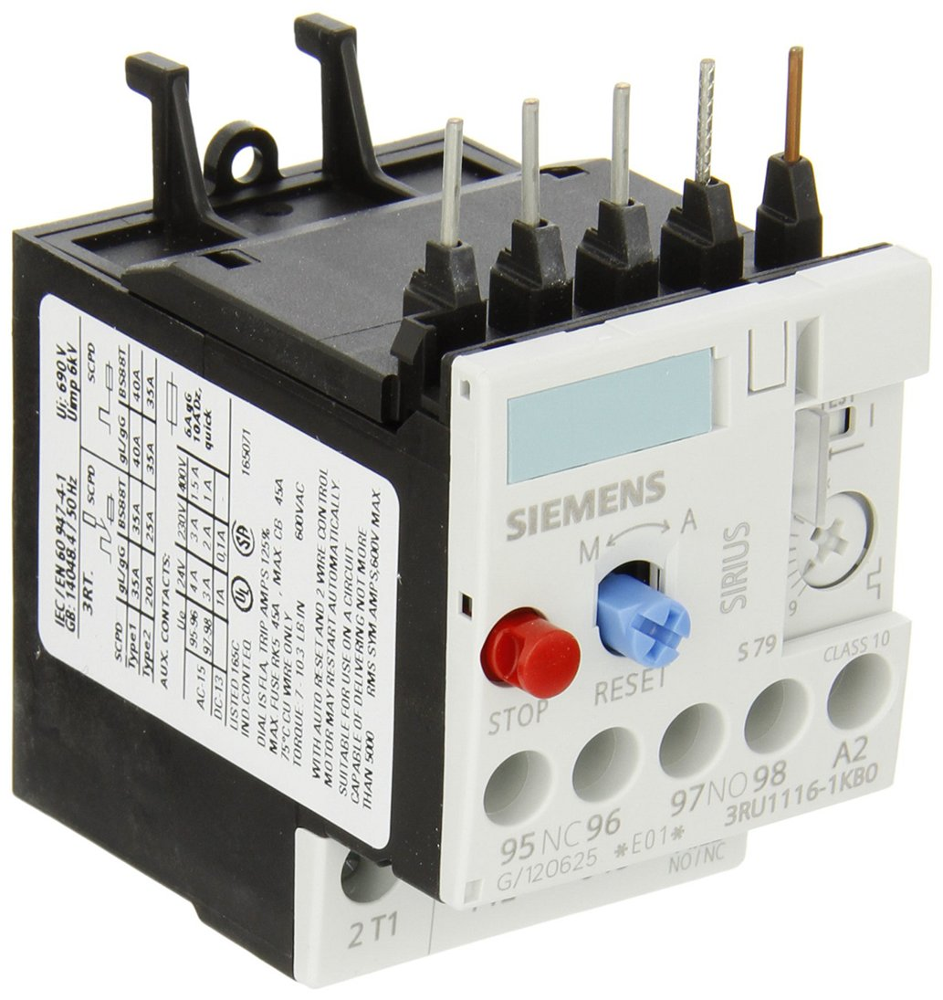
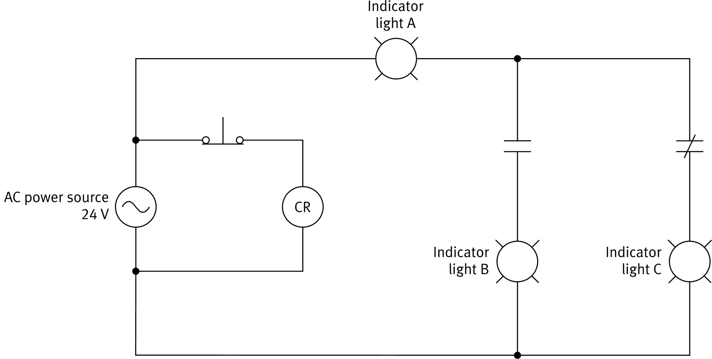

// Coil and contacts · Chattering and shading coils · Contactors · Protection relays
In the DC Circuit Fundamentals course, you saw that a relay is made of an electromagnet, usually a coil of wire wound around an iron core, and one or more sets of contacts. When current flows in the coil, the coil is energized and produces a magnetic field. That field pulls on the relay armature, which opens or closes the contacts. Each set of contacts acts like a switch in the circuit it is connected to.
An ac relay works the same way. The only difference is that the current in the coil is alternating current instead of direct current.
Twice every cycle, the ac current in the coil passes through zero. At those instants the coil is momentarily de-energized, so the pull on the armature drops to nothing.
In the control circuit, a toggle switch connects the ac source to the relay coil, CR. In the load circuit, the source feeds an indicator light through the relay's normally open (NO) contact, also labeled CR because it belongs to that coil.
Close the switch and watch the chain of events: the coil energizes, its field closes the NO contact, and the light turns on.
A common type of ac relay is the contactor. Its operating principles are virtually identical to those of any other relay: a coil is energized, and its magnetic field opens or closes a set of contacts.
The only feature that sets a contactor apart is its current rating, which is much higher than that of other types of relays.

Just like dc relays, ac relays are used in a wide variety of applications as a replacement for switches. A relay is safer for the user to operate than a switch, because the control circuit for the relay coil is isolated from the circuit the relay controls. That isolation lets a much lower current flow in the control circuit than in the controlled circuit.
The isolation advantage matters most for contactors, which control high-power loads such as heavy-duty motors, lighting and heating equipment, and capacitor banks.
Another common use of ac relays is in heating, ventilation, and air conditioning (HVAC) systems, where a low-voltage thermostat circuit switches blowers, compressors, and heaters.
AC relays are also often used for circuit protection, in which case they are called protection relays. A protection relay is designed to open a circuit when certain conditions occur, which stops the current from flowing.


For each state of the NC push button, decide whether the relay coil is energized or de-energized, and whether each indicator light is on or off.
Press and hold the NC push button, either in the diagram or with the button below it, then let go. Compare what you see with your predictions.